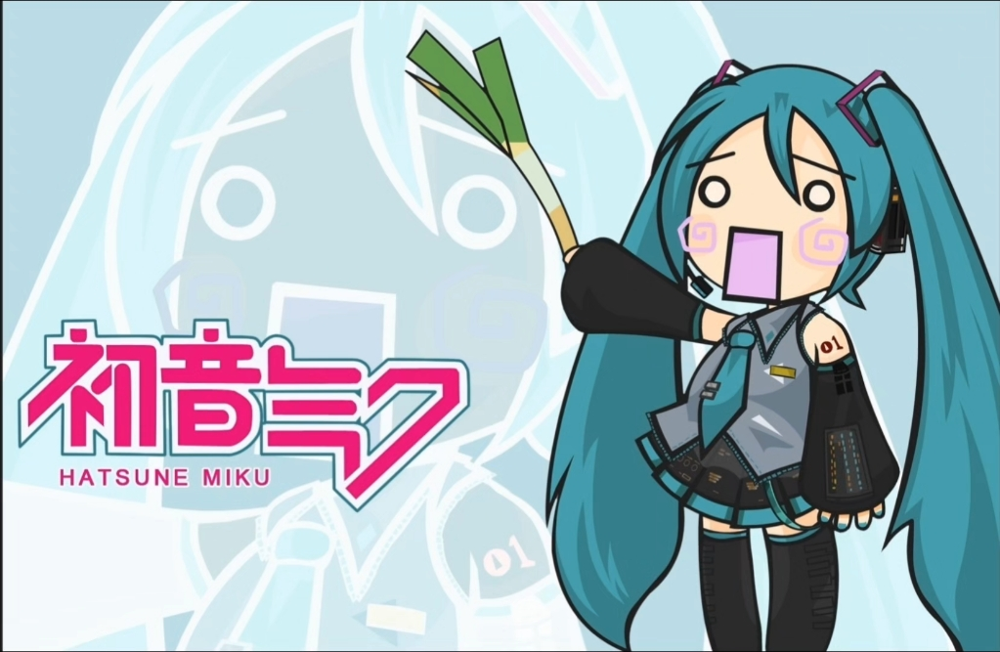
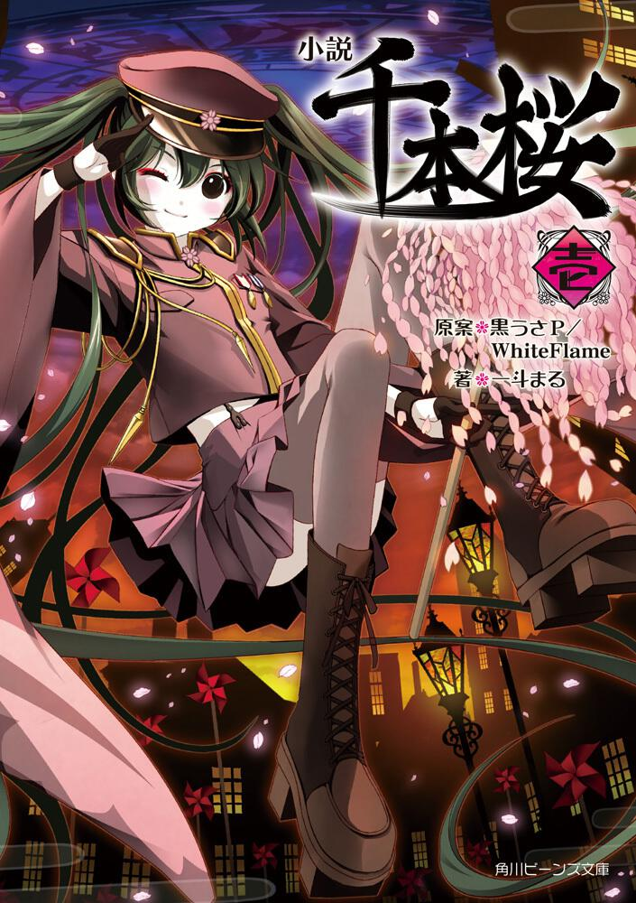

作品赏析

1.甩葱歌
2007年9月，CRYPTON发行以YAMAHA的VOCALOID语音合成软件为基础的角色主唱系列，其中以虚拟歌姬初音未来为吉祥物并演唱。此系列最先走红的视频中就有一个使用的是已颇为流行的甩葱歌，而内容是Q版初音甩葱的动作。 Vocaloid版伊娃的波尔卡的走红使得在这个视频上出现的Q版初音被看成是与之独立的角色初音未来，后者甚至拥有自己的黏土人角色模型（由GOOD SMILE COMPANY推出）。 截至2014年3月30日，其在niconico动画网站的播放次数已达392万。听众反映其具有“绝佳的洗脑作用”，亦有初音粉制作了长达十小时的版本。该曲在初音未来得以被多数人认知的过程中功不可没，初音未来的发售商CRYPTON认为此作品的宣传效果带来远超过100万日元的收益。

2.千本樱
《千本樱》是首由日本音乐制作人黑兔P创作的VOCALOID歌曲，通过虚拟女性歌手初音未来进行合成演唱。2011年9月17日，黑兔P首先在Niconico动画网上发布了这首歌曲，随后又将其上传至YouTube平台。 在创作歌词时，黑兔P采用了大量与明治维新及大正时代相关的词汇。而在整体的创作过程中，他又致力于将诸如“未来与过去”“西方与东方”等对立的概念或事物巧妙地融合在一起。之所他会选择大正时代作为歌曲的主题，是因为受到了一斗丸绘制的插图所影响。由于歌曲与绘图是同步制作的，因此绘图在完成过程中不断给予他灵感，有时甚至会促使他根据绘图的内容来调整歌曲的细节。
《千本樱》作为VOCALOID的标志性曲目，自发布以来迅速占据了卡拉OK的热门榜单，并赢得了众人的广泛赞誉与持续好评，其影响力不容小觑。这首歌曲巧妙融合了日式摇滚韵味，通过快节奏的钢琴旋律与鲜明的日本摇滚风格相辅相成，营造出一种未来与过去交织的怀旧氛围。初音未来清澈亮丽的嗓音为这首歌曲增色不少，使得整部作品悦耳动人。主创们以大正时代为背景，巧妙地将日本与西方世界观融合在一起，歌词深刻反映了明治维新后的时代精神。 《千本樱》不仅是首制作精良的歌曲，其歌词内容也很具深度。歌曲表达了对昭和时代军国主义导致的一系列战争给世界人民带来深重灾难的讽刺，以及对大正时代清新社会风气的怀念。同时，它也批判了当今人们娱乐历史、浮于世故，完全对不起前人牺牲的态度。无论是从歌曲内容的深度，还是音乐视频的视觉呈现来看，《千本樱》都体现了颇高的制作水准，充分展示了其作为初音未来和风歌曲的独特魅力。
3.达拉崩吧
《达拉崩吧》是由音乐人ilem作词并作曲，虚拟歌姬洛天依、言和共同演绎的VOCALOID歌曲。该作品于2017年3月25日由ilem投稿至哔哩哔哩弹幕网，随后由ARE乐默凡华以单曲形式正式发布。 《达拉崩吧》这首歌曲讲述的是一个关于勇者斗恶龙的老掉牙但又不失趣味的故事，其特别之处在于，故事中的每个角色都有着超长的名字，这些名字在歌曲中反复出现，形成了一种饶舌般的节奏，赋予了歌曲独特的魅力和魔力，引发听众的一致欢迎。
4.催眠术
《催眠术》是初音未来与重音Teto合作的Vocaloid歌曲，由サツキ创作，2024年5月17日发行。歌曲以潜意识操控为核心，通过电子音效和旋律构建迷幻氛围，初音未来清澈的声线与重音Teto沙哑音质的碰撞，隐喻催眠主题中的虚实交织。 歌词探讨了感情、虚实和逃避等主题，如“实际的感情完全No Think!”和“最顶级的逃避方式”，搭配独特的电子曲风，成为2024年热门的VOCALOID作品之一。